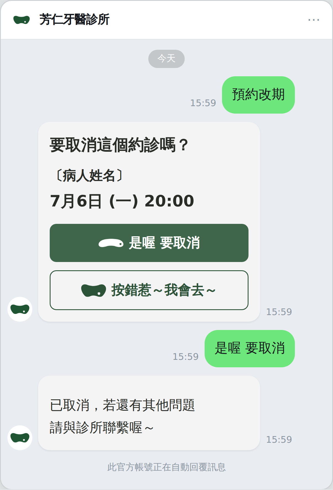
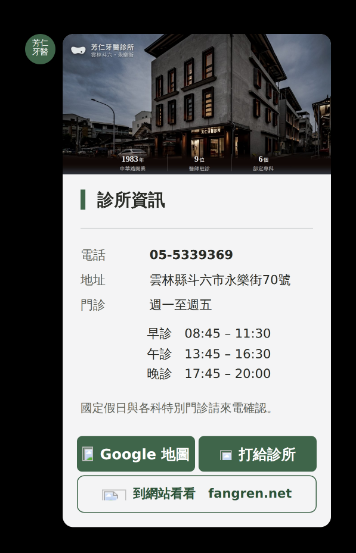
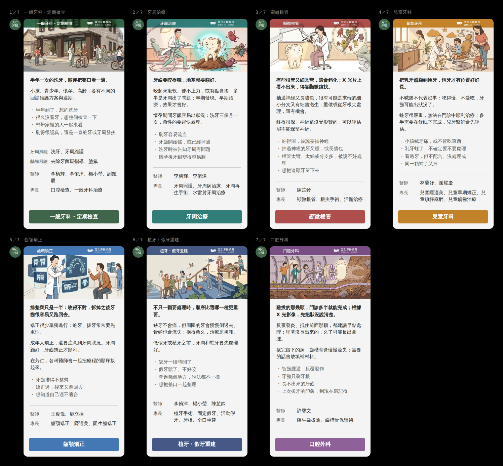
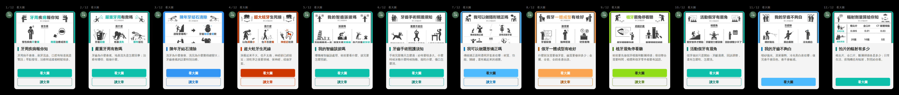

芳仁牙醫診所 LINE 官方帳號 模擬圖總覽 2026-09-07
這一頁只放成品的模擬圖：這個帳號上該有哪幾則訊息與哪幾張卡，
各自長什麼樣。
每一則的 Flex JSON、圖檔、量測與逐句的理由，在標題底下那個
完整規格連結裡。
要拿圖檔與可複製的文字：交付包 →
① 招呼圖卡 加入好友的當下 — 完整規格

↑ 病人手機上的真實大小（卡片 268px 寬）。以下每一張都是同一個尺度。
② 自動回應 病人在聊天室打任何一句字 — 完整規格

↑ 純文字，不是圖卡 這一則留在 LINE 官方帳號後台，診所自己設。
③ 綁定完成 病人綁定成功之後 — 完整規格

↑ Flex bubble：頭圖 ＋ 兩塊淡底的方塊。
④ 約診提醒 看診前 48 小時 — 完整規格

↑ 三顆按鈕都是可點的 box不是 button（button 放不進 logo）。
⑤ 預約成功 ＋ 約診紀錄查詢 同一張卡的兩個狀態 — 完整規格

↑ 預約成功（約診成立的當下，單張）。

↑ 約診紀錄查詢（輪播，一個約診一張，可以左右滑）。
⚠ 現況那一則的日期被截斷了（maxLines: 1），
詳見完整規格。

↑ 每一張卡右下角那顆浮水印的九個形狀與顏色。
⑥ 取消／改期那一段對話 病人按了圖文選單的「預約改期」 — 完整規格

↑ 確認卡（防誤按）。

↑ 按了「是喔 要取消」。

↑ 按了「按錯惹～我會去～」。

↑ 整段對話在聊天室裡的樣子。
⑦ 評價邀約 看診後 — 完整規格

↑ ⚠ 這一則先不要送 —— 那兩顆按鈕實際連到哪裡，會決定它算不算評論篩選， 問清楚之前新舊兩版都先擱著。理由見完整規格。
⑧ 颱風／臨時休診 縣府宣布之後，發給那天有約的人 — 完整規格

↑ 圖卡版（要你們從系統送才有）。
以下三張是圖文選單點下去回的卡，不是自動推播。 現在線上那幾格回的是廠商的預設值，這三張是要拿去換掉它的。
⑨ 診所資訊 圖文選單第一格

↑ 電話、地址、門診時間 ＋ 三顆按鈕（Google 地圖／打給診所／到網站看看）。 頭圖直接用站上那張分享圖，1983 年、9 位醫師、6 個部定專科已經印在圖上。
⑩ 主題與科別 圖文選單「診療項目」那一格 七科輪播

↑ 七科各一格（不是兩格），在 LINE 上是橫著滑的輪播，這裡照同一個順序一列排開。 每一格：那一科的分享圖 ＋ 一句病人自己的話 ＋ 該科的醫師與專長 ＋ 一顆該科顏色的按鈕。 ⚠ 這一條要左右滑才看得完，每一格左上角標著 1／7 ~ 7／7。
⑪ 衛教懶人包 圖文選單「衛教資訊」那一格 十二張

↑ 診所自己的紙本懶人包，一張一格；兩顆按鈕：「看大圖」開原圖、「讀文章」到站上那一篇。 ⚠ 這一條要左右滑才看得完，共十二格 ＝ LINE 的上限。